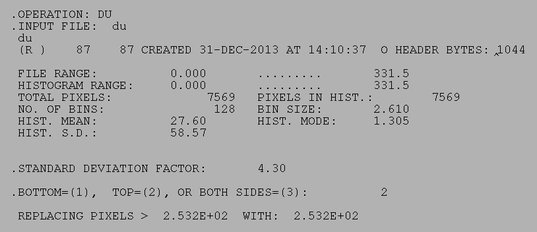

| .OPERATION: | DU | ; Dust removal |
| .INPUT FILE: | savpad_nik_sli_45_noisy | ; Image (OVERWRITTEN!) |
| .STANDARD DEVIATION FACTOR: | 4.3 | ; Truncation limit |
| .BOTTOM=(1), TOP=(2), OR BOTH SIDES=(3): | 2 | ; Truncate top only |
| INPUT IMAGE | OUTPUT IMAGE |
|---|---|
| savpad_nik_sli_45_noisy | du |
| RESULTS FILE |
|---|
|  |
| du_resu |